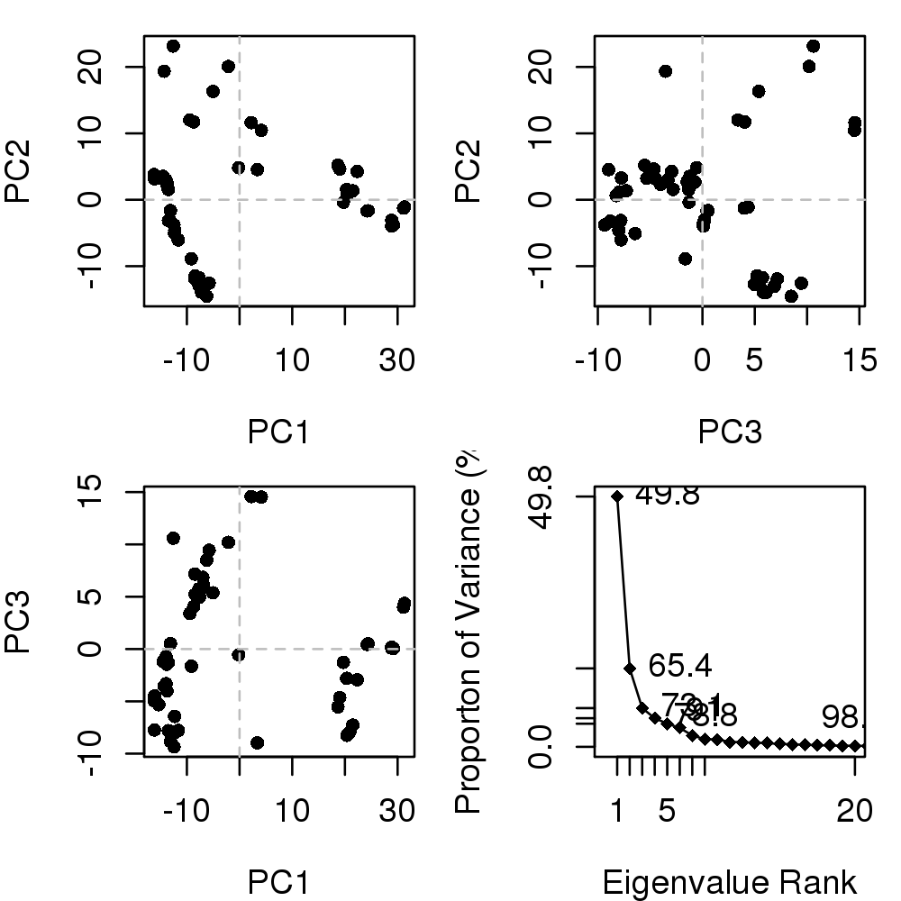
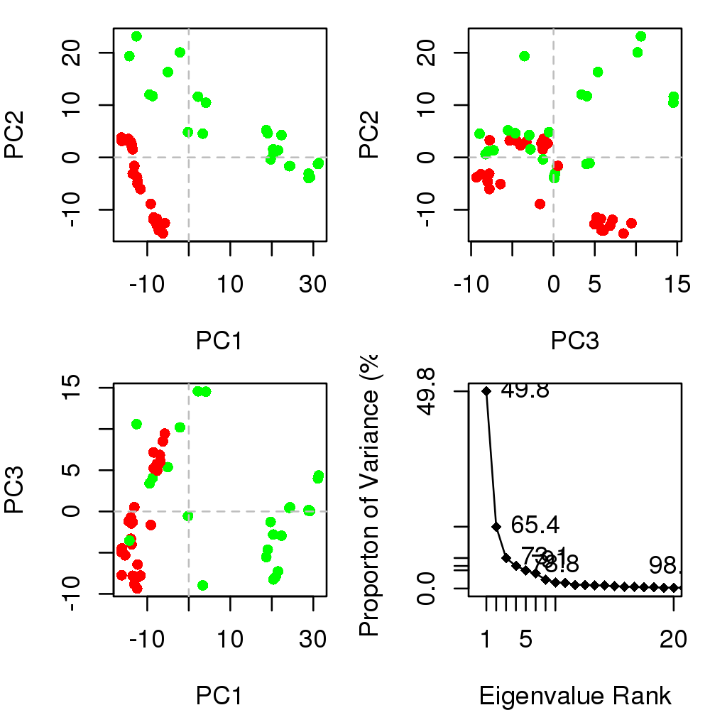

plot(x, pch = 16, col = par("col"), cex = 0.8, mar = c(4, 4, 1, 1), ...)
plot(x, y = NULL, type = "o", pch = 18, main = "", sub = "", xlim = c(0, 20), ylim = NULL,
ylab = "Proporton of Variance (%)", xlab = "Eigenvalue Rank", axes = TRUE, ann = par("ann"),
col = par("col"), lab = TRUE, ...)
plot(x, inds = NULL, col = rainbow(nrow(x)), lab = "", ...)
pca.xyz. Produces a z-score plot (conformer plot) and an eigen spectrum plot (scree plot).
plot.pca is a wrapper calling both plot.pca.score and
plot.pca.scree resulting in a 2x2 plot with three score plots
and one scree plot.
Called for its effect.
Grant, B.J. et al. (2006) Bioinformatics 22, 2695--2696.
data(transducin) attach(transducin, warn.conflicts=FALSE) pc.xray <- pca.xyz(pdbs$xyz[, gap.inspect(pdbs$xyz)$f.inds]) plot(pc.xray)
## color by nucleotide state vcolors <- annotation[, "color"] plot(pc.xray, col=vcolors)
## add labels #labs <- rownames(annotation) #inds <- c(2,7) #plot.pca.score(pc.xray, inds=inds, col=vcolors, lab=labs) ## color by seq identity #ide <- seqidentity(pdbs$ali) #hc <- hclust(as.dist(1-ide)) #grps <- cutree(hc, h=0.2) #vcolors <- rainbow(max(grps))[grps] #plot(pc.xray, inds=inds, col=vcolors, lab=labs) detach(transducin)